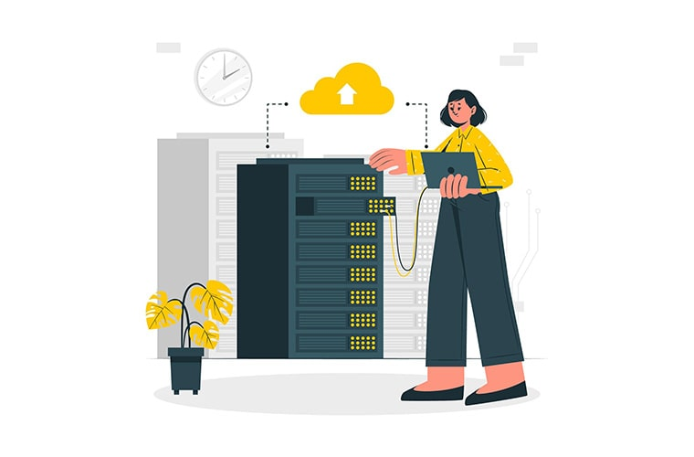

Modern Technology: Definition, Examples, and Applications
 Modern Technology changed a lot from what we saw in the last decade or the past
century. New machines and
gadgets are invented to make jobs easier like never before. From the little tailor machine to the
fastest
car in the world, all got automated reducing the manual actions required to the least. Modern
technology
schools made it easier for students to extract the possibilities of the latest tech inventions.
Their impact
is enormous in crafting perfect generation expertise in the current technology.
Modern Technology changed a lot from what we saw in the last decade or the past
century. New machines and
gadgets are invented to make jobs easier like never before. From the little tailor machine to the
fastest
car in the world, all got automated reducing the manual actions required to the least. Modern
technology
schools made it easier for students to extract the possibilities of the latest tech inventions.
Their impact
is enormous in crafting perfect generation expertise in the current technology.
What is Modern Technology?
Modern technology is the advancement of old technology with new additions and modifications. For example, it is impossible for the people in this decade to live with a wired telephone placed on the table. So, the mobile phone which can be taken with us anywhere is the perfect example of technological advancement or simply, modern technology. Any machine or device we see around us is the product of modern technology. It made things way easier than we could ever imagine.
Modern technology has impacted every area of our lives and become a crucial factor in no time. We even reached a point where everything we use in our daily life is directly or indirectly related to the technological advancement of some form. So, modern technology cannot be avoided even if we intentionally wanted to.
It is all about doing things in a much quicker, efficient way by improving the workflow. Either it could be helping humans or doing the task alone, machines are always better in terms of accuracy and efficiency. So, we are taking advantage of them to make our jobs easier. The realization that we can do a lot more stuff within minimal time, with less effort paved the path to modern technology as we see today.


Examples of Modern Technology
The latest modern technology examples include the 5G network which provides blazing fast internet to the users, self-driving cars, and reusable satellite launchers. But it is not limited to just these things. The technological progress we have made and the number of tools we have invented is beyond imagination. Here is a list of modern technology inventions that turned our lives easier and enhanced the easiness of performing operations in every industry. These are the examples of modern technology.
1. VR Headsets
In this modernized tech world, the place of VR headsets is no more hidden. The virtual world is directly taken in front of your eyes by just wearing a box-shaped headset. As you can see in the above image, the VR headsets are very convenient and easily available in the stores. Here is a funny video prank on a man who wore the VR headset, and a rollercoaster is taken in front of his eyes. Watching it will give you an exact idea about the power of VR headsets in tricking your eyes and mind.
2. Smartwatches
Smartwatches are just a variation of regular watches but come with a bunch of features as your smartphone. You can make calls, text your friends, browse the internet, and even take photos sometimes. In the contemporary tech world, smartwatches do stand a chance in increasing the productivity of users. Instead of taking out the smartphone each time to answer a call, or text a friend, it is way much easier to use your own watch. The Apple Watch Series 2 and Samsung Gear S3 are some best examples of smartwatches.
3. Robots
Robotics improved a lot in the last few years. Numerous new inventions arrived on the market in various forms and for various uses. The robots also widened the possibility of modern technology in education. They are being used to assist the teachers, help students, clean blackboards, clean the classrooms, etc. in hi-tech countries like Japan. They also invented robots that answer to humans utilizing artificial intelligence. Look at the following video to get a better idea about how far we reached in robotics.
4. Bitcoin
While modern technology gadgets are discussed above, it is time for something different. Bitcoin might be the best choice when it comes to the digital tech world. Bitcoin is a virtual money created by a person who is still not recognized completely. To understand the importance of Bitcoin you have to hear the present-day rate of it. 1 Bitcoin = 896.15 US Dollars as per 01/25/2017. Once it reached even around 1100+. But one of the major disadvantages of Bitcoin is the randomly changing value. The below-given video will provide more information.
5. Self-Driving Cars
Self-driving cars are another great example of modern technology inventions. Companies like Tesla have been building self-driving cars for a while now and keeps improving them on every new model. You don’t even have to put your hands on the wheel unless of an emergency. The cars will take you to any place marked on the map safely without you even worrying about the traffic. The advanced sensors placed on all sides can not only detect when the car is approaching danger but can also predict the possible issues during the drive. More companies are adapting to self-driving cars and ditching their old technologies.
6. Cloud Technology

Cloud technology is growing rapidly. From hosting websites online to developing artificial intelligence, cloud technology is used everywhere. From the traditional hosting technologies, cloud hosting/cloud computing is significantly different due to its extreme flexibility and expandable features. Cloud technology is being utilized in several areas of the industry such as factories, businesses, research organizations, government organizations, etc. to make their jobs easier. Cloud is the future.
Advantages of Modern Technology
As we already discussed in the above sections, technology is something which we can’t avoid in our life. If you are looking for the merits and demerits of modern technology, here are a few of them which are more oriented to modern technology than the overall tech. These points explain why we can’t live without technology. These are the advantages of modern technology.
- Modern technology takes Innovation and Creativity to the next level.
- It makes it much convenient to learn and grab information.
- Communications feature improved.
- Increased efficiency of people to complete particular tasks.
- Huge impact in the education industry.
- Connected people together through social networking.
- Transportation facilities boosted productivity.
- The lifestyle became easier.
- Improved diagnosis and curing equipment enhanced the health industry.
- Entertainment gadgets improved to the extreme.
- Improved the problem-solving ease.
- Helped small businesses to grow faster.
- Numerous equipment got lesser prices with new technologies.
Disadvantages of Modern Technology
Modern technology got some disadvantages too. Like anything in the world which has a good side and a bad, modern technology also has the same. As you may have already guessed, the demerits aren’t any less. These are the disadvantages of modern technology.
- Modern technology creates job insecurity due to the excessive use of robots and machines.
- It increased competition in every field due to the usage of automation.
- Affected social life by keeping people attached to tech gadgets.
- Creation of harmful weapons and machinery.
- Increased pollution of air, water, and soil.
- Cybercrimes increased, and almost anything is destructible by brilliant hackers.
- Modern technology can create health complications like obesity due to the addiction to devices such as smartphones or tablets.
- It can be a huge waste of time due to addiction to modern gadgets
- It can cause distractions from studies and other natural activities.
- Modern technology can affect the creativity of people because of the easiness to do things using technology.